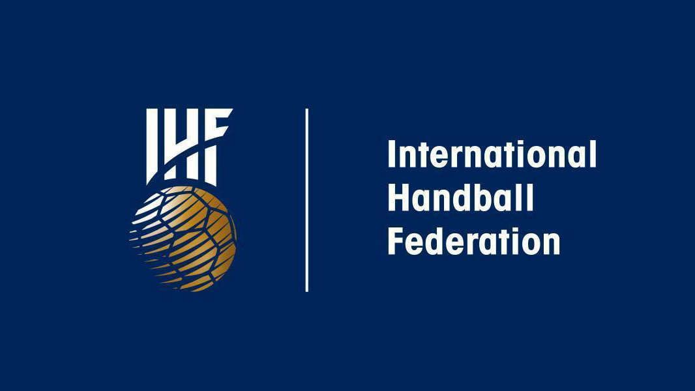

1. В каком году Джеймс Нейсмит изобрел игру баскетбол?
2. В каком году в баскетбол начали играть в России?
3. С чего начинается игра в баскетбол?
4. Правильные размеры баскетбольной площадки
5. Вес баскетбольного меча составляет…

6. Год создания международной федерации гандбола
7. Кто из советских спортсменок дважды становился олимпийской чемпионкой в гандболе?
8. Цель игры гандбол
9. Параметры мача для игры в гандбол
10. Продолжительность одного тайма игры в гандбол
11. В каком году в программу олимпийских игр стал входить футбол?
12. Что такое пенальти?

13. Кто из советских вратарей был признан лучшим в Европе?
14. Как называется футбольный клуб Санкт-Петербурга?

15. В каком году в СПБ состоялся первый товарищеский матч?